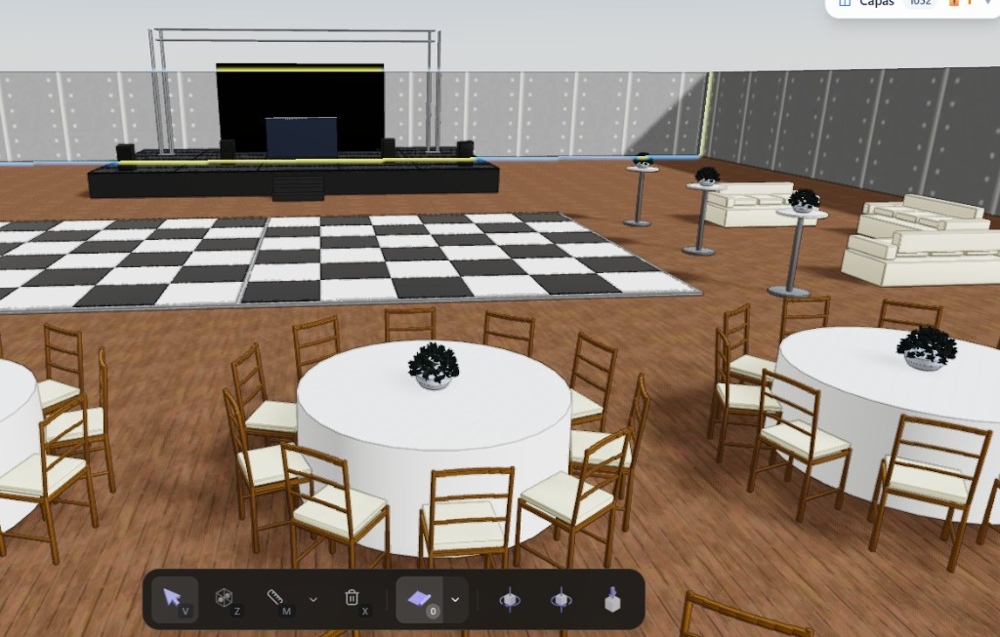

CAD 3D & SIMULACIÓN ESPACIAL
Lead: Cristian Villota
AFORO • Simulador & CAD 3D de Eventos en Tiempo Real 🚧 En Construcción • Alpha WIP
Proyecto en desarrollo activo: Plataforma interactiva para la estructuración y cálculo de aforo en recintos feriales. Permite manipular geometrías procedurales e instanciadas con dotación de sillas automáticas y validación perimetral instantánea.
✓
145.5 FPS sostenidos: Manejo fluido de más de 1.000 objetos simultáneos mediante
InstancedMesh multimaterial.
✓
Green Computing: Arquitectura de render bajo demanda con 0 FPS y 0 Watts en GPU en reposo.
✓
Catálogo Canónico: 902 artículos normalizados y 241 modelos GLB validados con SHA-256.
✓
Ingeniería Rigurosa: 68 tests automatizados y 2.944 aserciones matemáticas.
Three.js 0.174
WebGPU / R3F
React 19
Next.js 15
Bun & Turbo
Zustand
